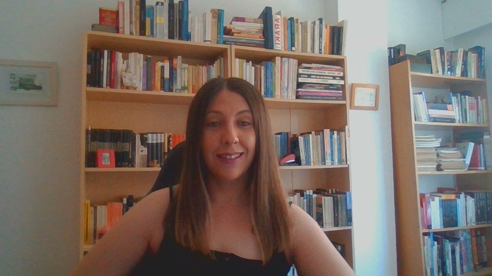
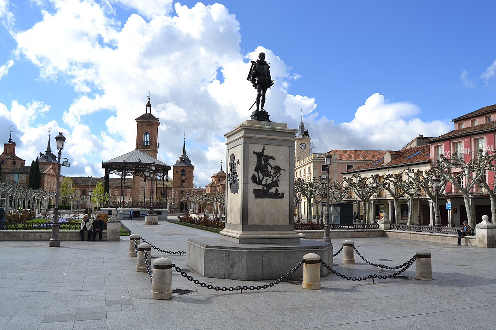

Perfil Personal


Soy Paula de Juan, una apasionada del desarrollo web y la tecnología, con un enfoque en la creación de soluciones digitales innovadoras.
Mi objetivo es combinar mis habilidades técnicas con mi experiencia en atención al cliente para ofrecer experiencias de usuario excepcionales.
Me considero una persona proactiva, creativa y orientada a resultados, siempre buscando aprender y mejorar en cada proyecto que emprendo. Disfruto trabajando en equipo y colaborando con otros profesionales para alcanzar metas comunes.
Vivo en Alcalá de Henares, Madrid. Aquí podéis ver la Plaza de Cervantes de Alcalá de Henares.
Perfil Profesional
Soy Paula de Juan, Desarrolladora Web Junior Full-Stack en formación continua mediante el Ciclo Formativo de Grado Superior en Desarrollo de Aplicaciones Web (DAW) Cuento con formación intensiva a través de un Bootcamp especializado en el stack MERN (MongoDB, Express, React y Node.js con JavaScript), habiendo llevado a cabo proyectos prácticos como el desarrollo de una aplicación web de red social.
Complemento mi perfil técnico con una sólida especialización en Big Data y Análisis de Datos, aplicando procesos ETL (Extracción, Transformación y Limpieza) sobre grandes volúmenes de datos mediante Python, Excel Avanzado y la creación de cuadros de mando interactivos en Power BI Además, aporto más de 8 años de experiencia en atención al cliente y entornos dinámicos, lo que refuerza mis habilidades comunicativas, adaptabilidad y trabajo en equipo.
Mi objetivo es seguir creciendo profesionalmente en el ámbito del desarrollo web y la analítica de datos.
Competencias y Áreas de Especialización
- Desarrollo Web Full-Stack: Construcción de arquitecturas cliente-servidor con JavaScript (MERN Stack), diseño de interfaces atractivas y adaptables: Responsive Design con HTML5, CSS3, Bootstrap, Tailwind CSS y uso de React y Node.js, MongoDB para la base de datos NO relacional, y maquetación con Figma.
- Versatilidad en Stacks Tecnológicos: Capacidad rápida de adaptación y aprendizaje en entornos de Back-end como con el MERN stack: MongoDB, Express.js, React, Node.js, como aprendizaje de otros entornos: Java con Spring Boot, PHP con Laravel y Symfony, y Python con Django .
- Control de Versiones y Flujo de Trabajo: Manejo fluido de Git y GitHub mediante línea de comandos en terminal, integración con Visual Studio Code e IDEs, bajo metodologías ágiles: "Agile".
- Gestión de Contenidos y Posicionamiento: Configuración y despliegue en CMS WordPress, integración de plugins y buenas prácticas de SEO.
- Tratamiento y Análisis de Datos (Big Data): Procesamiento y carga de conjuntos de datos en formatos CSV, JSON y Excel mediante scripts en Python, modelado y visualización analítica avanzada en Microsoft Power BI.
Idiomas y Habilidades Interpersonales
-
Idiomas:
- Español: Nativo.
- Inglés: Nivel B2 acreditado (Upper Intermediate).
-
Soft Skills:
- Comunicación orientada a resultados.
- Resiliencia.
- Empatía con el usuario final.
- Resolución metódica de problemas.
- Alta capacidad de trabajo colaborativo.